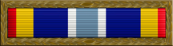

Service awardFormerly the Air Force Expeditionary Service Ribbon · AFESR
For deployments on contingency, exercise, or deployment orders; a gold border denotes combat operations.
Check your eligibility and build your ribbon rackYou earn this by meeting the requirements. No recommendation is needed. If it's missing from your record, current members can have their MPF add it. Veterans can request it from AFPC with a Standard Form 180 and supporting documents.
In April 2004, the Secretary of the Air Force approved authorizing a gold border to be worn on the Air Force Expeditionary Service Ribbon to represent participation in combat operations. Award of the gold border is authorized for wear on the AFESR by individuals who were engaged in conducting or supporting combat operations in a designated combat zone.
A combat zone is defined as a geographic area designated by the president via executive order, or a qualified hazardous duty area in which a member is receiving imminent danger/hostile fire pay. Combat action is defined as when a member is subject to hostile fire, explosion or is engaged in employing lethal weapons (kinetic/non-kinetic).
For award of the AFESR w/GB, members must be/have been assigned to an Air Expeditionary Force Plan Identification or on Contingency Exercise Deployment orders and have been receiving IDP/HFP. Aircrew members who engage in combat action must be assigned on aeronautical orders in direct support of a combat zone.
Prior to the award of the gold border, members must have met the eligibility requirement for award of the basic AFESR. The AFESR w/GB may be awarded to current and former Air Force active duty, Reserve, and Guard personnel who since Oct. 1, 1999 meet the requirements of Paragraph 2 and 3.
The time eligibility criteria for award of the basic AFESR w/GB can be waived if the member meets one of the following criteria:
-Be engaged in actual combat against the enemy and under circumstances involving grave danger of death or serious bodily injury from enemy actions
-While participating in a designated operation, be killed, wounded, or injured requiring medical evacuation from the combat zone
-Be a regularly assigned crew member flying combat/combat support sorties into, out of, within, or over a combat zone
-Employ a kinetic or non-kinetic weapon from outside the designated combat zone, in a combat operation
The Air Force Expeditionary Service Ribbon is worn between the Air Force Overseas Service Ribbon (Long Tour) and the Air Force Longevity Service Ribbon.
This ribbon is arranged in eleven stripes in a symmetrical pattern. The center stripe is light blue and stands for Air Force capability. From this center stripe outward on each side, the narrow white stripe stands for integrity; ultramarine blue represents worldwide deployment; Air Force yellow stands for excellence, and the last two stripes (scarlet and blue) stand for the United States.
Oak Leaf Cluster
Source: Air and Space Expeditionary Service Ribbon fact sheet, Air Force's Personnel Center